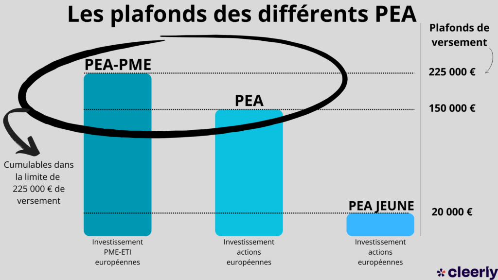
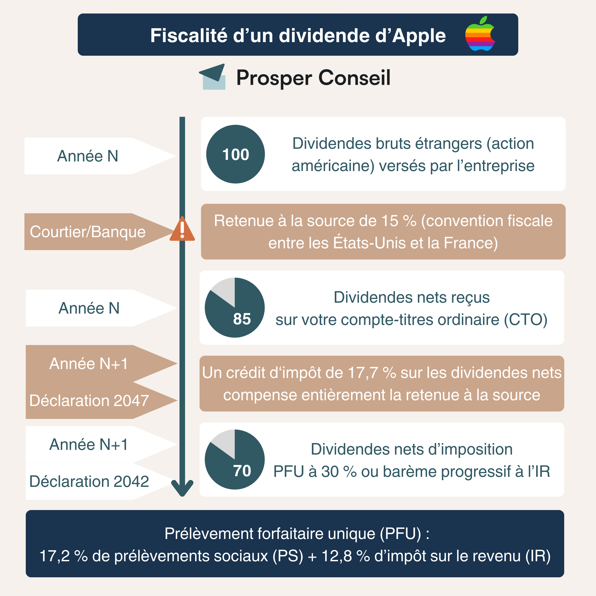

Le système fiscal français est souvent perçu comme un labyrinthe administratif d'une complexité redoutable. Pourtant, pour l'investisseur particulier, les règles du jeu ont été considérablement clarifiées ces dernières années. Maîtriser ce cadre n'est pas une option : c'est le levier le plus puissant pour maximiser la rentabilité nette de vos investissements à long terme.
Contrairement à certains de ses voisins européens, la France impose structurellement les plus-values boursières. Cependant, elle offre aux résidents fiscaux français deux enveloppes distinctes, chacune répondant à des logiques et des avantages radicalement différents : le Plan d'Épargne en Actions (PEA) et le Compte-Titres Ordinaire (CTO). Décortiquons ensemble cette mécanique de précision.
1. Le PEA : L'Oasis Fiscale Européenne (et ses plafonds)
Le Plan d'Épargne en Actions est une exception culturelle et fiscale française. Il a été conçu pour inciter les Français à investir dans l'économie locale et européenne. Si vous achetez des actions d'entreprises dont le siège social est situé dans l'Espace Économique Européen (LVMH, ASML, L'Oréal, etc.), le PEA est l'enveloppe reine.

Comme l'illustre le graphique ci-dessus, il existe plusieurs moutures du PEA, chacune avec ses propres limites de versements (attention, le plafond concerne l'argent déposé, pas la valeur totale du portefeuille qui peut, elle, croître indéfiniment) :
- Le PEA Classique : Plafonné à 150 000 € de versements. C'est le socle de base de tout investisseur français.
- Le PEA-PME : Plafonné à 225 000 €, mais restreint aux petites et moyennes entreprises. Vous pouvez cumuler un PEA classique et un PEA-PME, mais la somme totale de vos versements sur les deux ne peut excéder 225 000 €.
- Le PEA-Jeunes (Le cadeau pour les 18-25 ans) : Si vous avez entre 18 et 25 ans et que vous êtes encore rattaché au foyer fiscal de vos parents, vous pouvez ouvrir votre propre PEA ! Il est plafonné à 20 000 €. C'est l'outil parfait pour commencer à investir tôt et, surtout, "prendre date" (lancer le chronomètre fiscal) le plus vite possible.

La puissance du PEA réside dans son évolution temporelle. Tout se joue autour d'une date clé : le 5ème anniversaire de son ouverture (date du premier dépôt en numéraire).
- La phase de capitalisation (Années 0 à 5) : Tant que vous ne sortez pas d'argent du PEA, vous pouvez acheter, vendre, toucher des dividendes et réinvestir sans payer le moindre impôt. C'est un environnement fiscalement clos. Toutefois, si vous effectuez un retrait avant les 5 ans, c'est la sanction : le PEA est automatiquement clôturé, et vos gains sont imposés à la Flat Tax (soit 31,4 % depuis 2026).
- La phase d'exonération (Après 5 ans) : C'est ici que la magie opère. Tout retrait effectué après le 5ème anniversaire bénéficie d'une exonération totale d'impôt sur le revenu (IR). Vos gains ne seront soumis qu'aux prélèvements sociaux (actuellement 18,6 %). De plus, un retrait n'entraîne plus la fermeture du plan, et vous pouvez même continuer à y faire de nouveaux versements.
Le "Hack" ultime : Les ETF Synthétiques dans le PEA 🧠
La règle d'or du PEA stipule que le fonds doit être investi à 75 % minimum dans des actions d'entreprises de l'Espace Économique Européen (EEE). Pourtant, de nombreux investisseurs français utilisent leur PEA pour investir sur le marché américain (S&P 500 ou NASDAQ). Comment est-ce possible ? Grâce à la réplication synthétique.

Comme le montre l'image ci-dessus, un ETF à réplication physique achète et détient exactement les actions de l'indice qu'il suit (par exemple, les 500 entreprises du S&P 500). En revanche, l'ETF à réplication synthétique détient un panier d'actions complètement différent (le "collatéral") et utilise un contrat "Swap" avec une banque pour échanger la performance.

C'est ici qu'intervient l'ingénierie financière illustrée par ce second schéma : le gestionnaire de l'ETF (comme Amundi ou BlackRock) constitue son portefeuille de support avec au moins 75 % de grandes actions européennes (on aperçoit TotalEnergies, BNP Paribas, Sanofi). Le critère d'éligibilité au PEA est donc légalement respecté ! Ensuite, l'ETF signe un Swap avec une banque : il lui cède le rendement de ces actions européennes, et la banque lui verse en échange le rendement exact de l'indice américain (ex: le S&P 500).
Résultat : Vous profitez de la croissance du marché américain tout en bénéficiant de l'exonération fiscale du PEA. C'est une stratégie 100 % légale et extrêmement populaire.
2. Le CTO, la Flat Tax (31,4 %) et la Gestion des Moins-Values
Si vous souhaitez acheter directement des actions individuelles américaines (Microsoft, Apple, Visa) ou asiatiques, le PEA ne vous sera d'aucune utilité. C'est ici qu'intervient le Compte-Titres Ordinaire (CTO).
Le CTO n'a aucun plafond de versement, aucune contrainte géographique et aucune condition de durée. En contrepartie, il ne bénéficie d'aucune enveloppe protectrice. Depuis la récente hausse de la CSG au 1er janvier 2026, la fiscalité du CTO repose sur un PFU (Prélèvement Forfaitaire Unique) ou "Flat Tax" de 31,4 %.
Cette Flat Tax à 31,4 % se décompose ainsi :
- 12,8 % au titre de l'Impôt sur le Revenu (IR).
- 18,6 % au titre des Prélèvements Sociaux (CSG, CRDS, etc., contre 17,2 % avant 2026).
Stratégie Avancée : Le "Tax-Loss Harvesting" 📉
On parle souvent de la taxation des gains, mais le CTO offre un mécanisme puissant pour optimiser vos pertes : le report des moins-values. Si vous vendez une action à perte sur votre CTO, cette moins-value ne s'évapore pas. Elle est reportable pendant 10 ans. Concrètement, si vous perdez 1 000 € cette année en coupant une mauvaise position, vous conservez un "crédit" qui viendra annuler 1 000 € de vos futures plus-values. Vous ne paierez donc pas les 31,4 % sur vos 1 000 prochains euros de bénéfice. Gérer stratégiquement ses pertes en fin d'année pour effacer ses gains est une pratique courante appelée Tax-Loss Harvesting.
L'alternative : Le Barème Progressif ⚖️
Bien que la Flat Tax (31,4 %) soit le régime par défaut, la loi française vous autorise à opter globalement pour l'imposition au barème progressif de l'impôt sur le revenu. Si vous êtes non-imposable ou dans une tranche marginale d'imposition très basse (0% ou 11%), cette option peut s'avérer mathématiquement plus avantageuse que les 12,8 % fixes de la part IR du PFU, d'autant plus qu'elle permet la déductibilité d'une partie de la CSG.
3. La Fiscalité des Dividendes et la Double Imposition
Percevoir des dividendes d'entreprises étrangères implique une mécanique fiscale complexe impliquant deux États souverains. Prenons l'exemple d'un investisseur français percevant un dividende de la société américaine Apple.

Voici comment se déroule l'opération pas à pas :
- La retenue à la source étrangère : L'État américain prélève immédiatement une taxe sur le dividende brut. Par défaut, celle-ci est de 30 %. Cependant, grâce à la convention fiscale franco-américaine (activable en remplissant le fameux formulaire W-8BEN chez votre courtier), cette retenue est réduite à 15 %. Sur 100€ de dividendes bruts, vous recevez donc 85€ sur votre compte.
- L'imposition française : L'État français exige ensuite sa Flat Tax de 31,4 %... mais sur le dividende brut initial de 100€, soit 31,40€.
- Le crédit d'impôt (Le bouclier) : Pour éviter que vous ne soyez littéralement écrasé par cette double imposition, le fisc français vous accorde un crédit d'impôt équivalent à l'impôt déjà payé à l'étranger pour neutraliser la ponction américaine et ramener l'impôt total au taux exact du PFU.
Conclusion : Que l'action soit française ou américaine (avec un W-8BEN valide), votre imposition globale et finale sur le dividende sera toujours plafonnée aux 31,4 % de la Flat Tax. La convention fiscale neutralise la pénalité géographique.
4. L'Obligation Pénale : Le Formulaire 3916 (Comptes à l'étranger)
Si vous optez pour des courtiers modernes et compétitifs basés hors de France (comme Trade Republic en Allemagne, Scalable Capital, Interactive Brokers en Irlande, ou Degiro aux Pays-Bas), une obligation déclarative stricte s'impose à vous.
La loi française exige que chaque contribuable déclare l'ouverture, la détention, l'utilisation ou la clôture de comptes bancaires ou de comptes-titres ouverts à l'étranger. Cela se fait via le formulaire 3916 / 3916-bis, à annexer à votre déclaration de revenus annuelle (en mai/juin).
Ne jouez pas avec le Formulaire 3916 ⚠️
L'omission de cette déclaration n'est pas considérée comme un simple oubli administratif. Le fisc sanctionne la non-déclaration par une amende forfaitaire sévère de 1 500 € par compte non déclaré et par année d'omission (voire 10 000 € si le compte est situé dans un État n'ayant pas conclu de convention d'assistance administrative avec la France). Sachant que les courtiers étrangers transmettent automatiquement vos données au fisc français (norme CRS), vous serez inévitablement rattrapé. Déclarez vos comptes.
5. La Taxe sur les Transactions Financières (TTF)
Pour être exhaustif sur le panorama fiscal français, il faut mentionner la TTF. Instituée en 2012, cette taxe s'applique lors de l'acquisition d'actions de grandes entreprises françaises dont le siège social est situé en France et dont la capitalisation boursière dépasse 1 milliard d'euros (les fleurons du CAC 40 et du SBF 120).
Le taux de la TTF est fixé à 0,3 % du montant de l'acquisition. Elle s'ajoute à vos frais de courtage lors de l'achat. Bonne nouvelle : elle ne s'applique pas lors de la revente, ni sur les actions étrangères, ni sur l'achat d'ETF (Trackers).
🔑 Ce qu'il faut retenir
Le PEA (et PEA-Jeunes) est l'enveloppe reine pour défiscaliser vos gains après 5 ans, et permet même d'investir aux US grâce aux ETF synthétiques.
Le CTO sert pour le stock picking international direct, taxé à la nouvelle Flat Tax de 31,4 %, mais offre le puissant avantage de reporter ses moins-values sur 10 ans.
Enfin, remplissez toujours le W-8BEN pour vos dividendes US et déclarez scrupuleusement vos courtiers étrangers (formulaire 3916) sous peine de lourdes amendes.